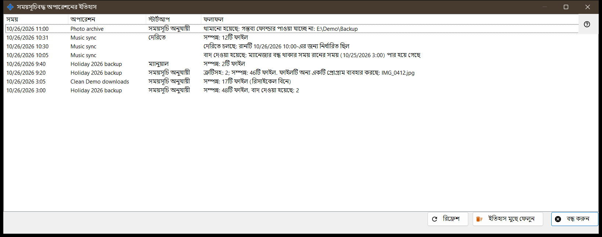
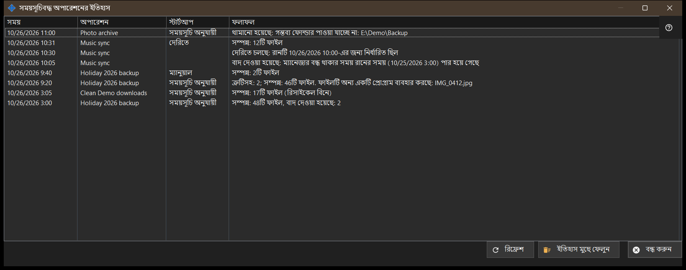

সময়সূচিবদ্ধ অপারেশনের ইতিহাস
এটি কীসের জন্য
জার্নালে নথিবদ্ধ সময়সূচিবদ্ধ ফাইল অপারেশনের সাম্প্রতিক রান ও নোট দেখায়। সময়সূচিবদ্ধ ফাইল অপারেশন Share Manager-এর সঙ্গেই ইনস্টল হয় - একটিই প্যাকেজ, আলাদা ডাউনলোড ছাড়া এবং Windows সেবা ছাড়া - এবং Share Manager আপনার সাইন-ইন সেশনে চলা পর্যন্ত চলে; এর জন্য ফোল্ডার শেয়ারিং, সার্ভার, খোলা পোর্ট বা অ্যাডমিনিস্ট্রেটর অধিকার লাগে না। এটি নির্ধারিত অপারেশন উইন্ডোর এবং Share Manager সেটিংসের সময়সূচিবদ্ধ ফাইল অপারেশন পৃষ্ঠার ইতিহাস.. থেকে খোলে।


এই ক্রমে
- তালিকা পড়ুন: সময়, অপারেশন, স্টার্টআপ ও ফলাফল।
- ফলাফল লম্বা হলে উইন্ডো চওড়া করুন।
- জার্নাল আবার পড়তে রিফ্রেশ চাপুন।
- খালি করতে ইতিহাস মুছে ফেলুন চাপুন ও নিশ্চিত করুন।
- বন্ধ করুন চাপুন।
উপাদানসমূহ
কলাম
সময়, অপারেশন (তার নাম), স্টার্টআপ এবং ফলাফল। স্টার্টআপ হলো সময়সূচি অনুযায়ী, ম্যানুয়াল, সব চালান বা দেরিতে, এবং নোটের ক্ষেত্রে ফাঁকা থাকে। উইন্ডো খোলার সময় ও রিফ্রেশে জার্নালের সর্বশেষ 200টি এন্ট্রি পড়ে; নিজে থেকে হালনাগাদ হয় না।
রানের ফলাফল
সম্পন্ন: Nটি ফাইল, আর কিছু বাদ গেলে তার সঙ্গে , বাদ দেওয়া হয়েছে: M যোগ হয়, এবং মুছে ফেলার ক্ষেত্রে (রিসাইকেল বিনে)। ত্রুটিসহ: N; সম্পন্ন: Mটি ফাইল, এর পরে প্রথম কারণ, যেমন ফাইল ব্যবহারে আছে, অ্যাক্সেস নেই, ফাইল পাওয়া যায়নি বা বদলে গেছে, অথবা ডিস্ক ভরা। থামানো হয়েছে: .. যখন কোনো বাধা রান থামায়, যেমন নাগালের বাইরের ফোল্ডার, যে রিসোর্সের পাসওয়ার্ড সংরক্ষিত নেই বা সার্ভারের কী নিশ্চিত করা হয়নি, অথবা অফলাইন ডিভাইস। চালু হয়নি: .. যখন সংজ্ঞা প্রত্যাখ্যাত হয়, বাদ দেওয়া হয়েছে: .. এবং বাধাপ্রাপ্ত। জার্নাল কোড রাখে, কাঁচা ত্রুটির লেখা নয়, তাই শব্দচয়ন বর্তমান ভাষা অনুসরণ করে। একটি পক্ষ Google Drive হলে কারণ হতে পারে Google Drive-এর সাথে সংযোগ না থাকা, সেখানে জায়গা না থাকা, সেখান থেকে সাইন আউট বা প্যাকেটের সীমার চেয়ে বড় ফাইল।
নোট
যে সারিতে স্টার্টআপ নেই সেটি নোট: বাদ দেওয়া হয়েছে: ম্যানেজার বন্ধ থাকার সময় রানের সময় (..) পার হয়ে গেছে; দেরিতে চলছে: রানটি ..-এর জন্য নির্ধারিত ছিল; প্রত্যাখ্যাত: এই অপারেশন ইতিমধ্যে চলছে বা সারিতে অপেক্ষা করছে; এবং পুনরায় শুরু হয়েছে: থামার কারণ দূর হয়েছে।
ইতিহাস মুছে ফেলুন
জিজ্ঞাসা করে: সময়সূচিবদ্ধ অপারেশনের ইতিহাস মুছে ফেলবেন? অপারেশন ও তাদের সময়সূচি অপরিবর্তিত থাকবে। ডিফল্ট উত্তর না। এটি শুধু এই জার্নাল খালি করে; অপারেশন ও তাদের সময়সূচি থেকে যায়। ইতিহাস খালি থাকলে বোতামটি নিষ্ক্রিয় থাকে।
ম্যানেজার সেটিংস · SFTP শেয়ারিং সেটিংস · এক্সচেঞ্জ সার্ভার সেটিংস